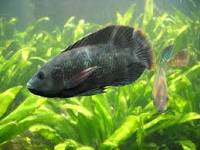

Tilapia
La tilapia es un genero de peces de agua dulce que pertenece a la familia Cichlidae. Dentro de este genero, hay varias especies de tilapia que son criadas y consumidas en todo el mundo. Estos peces son populares en la acuicultura debido a su rapido crecimiento, capacidad para adaptarse a diversas condiciones ambientales y su carne suave y sabrosa. La tilapia es consumida en muchas partes del mundo y se ha convertido en una importante fuente de proteinas en la dieta humana. Su carne es magra, blanca y se presta bien para diversas formas de preparacion, como la parrilla, la fritura, el horneado o la coccion al vapor. La tilapia es conocida por su sabor suave y su textura tierna. Es importante senalar que, debido a la cria extensiva de tilapia en acuicultura, este pez se ha convertido en uno de los pescados de cultivo mas comunes a nivel mundial. Sin embargo, su produccion y consumo tambien han generado debates sobre practicas sostenibles y su impacto ambiental en algunas regiones. Al elegir tilapia, muchas personas buscan opciones que provengan de fuentes sostenibles y respetuosas con el medio ambiente.
